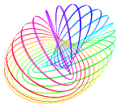

Special Session on Geometric and Algebraic Topology
AMS 2011 Fall Eastern Sectional Meeting
Cornell University, Ithaca, NYSeptember 10 and 11, 2011
|
|
Special Session on Geometric and Algebraic TopologyAMS 2011 Fall Eastern Sectional MeetingCornell University, Ithaca, NYSeptember 10 and 11, 2011 |
 |
Boris Goldfarb and Marco Varisco, University at Albany, SUNY. [e-mail]
| from | to | Saturday, September 10 | Sunday, September 11 |
|---|---|---|---|
| 8:00 a.m. | 8:20 a.m. | Arithmetic Groups: Dave Witte Morris | — |
| 8:30 a.m. | 8:50 a.m. | Bradley Forrest | |
| 9:00 a.m. | 9:20 a.m. | Alexander Dranishnikov | Steven Ferry |
| 9:30 a.m. | 9:50 a.m. | ||
| 10:00 a.m. | 10:20 a.m. | Bernard Badzioch | Patricia Cahn |
| 10:30 a.m. | 10:50 a.m. | Wojciech Dorabiala | Rob Schneiderman |
| 11:05 a.m. | 11:55 a.m. | Invited Address: Katrin Wehrheim | Invited Address: Nigel Higson |
| 1:55 p.m. | 2:45 p.m. | Invited Address: Mladen Bestvina | — |
| 3:00 p.m. | 3:20 p.m. | Arithmetic Groups: Kevin Wortman | Boris Okun |
| 3:30 p.m. | 3:50 p.m. | Brenda Johnson | |
| 4:00 p.m. | 4:20 p.m. | Courtney Morris Thatcher | Mark Johnson |
| 4:30 p.m. | 4:50 p.m. | Jeremy Brazas | |
| 5:00 p.m. | 5:20 p.m. | Ross Geoghegan | |
| 5:30 p.m. | 5:50 p.m. | ||
Abstract: Higher torsion invariants are invariants of bundles of smooth manifolds that can distinguish between bundles that are not diffeomorphic even if they are fiberwise homotopy equivalent. The talk will describe a construction of higher torsion by means of the secondary transfer of bundles. I will also explain how this approach to higher torsion provides an insight into some of its properties.
Abstract: One may consider the finest group topology on the fundamental group of a space for which the map from the loop space identifying homotopy classes is continuous. This “topological” fundamental group remembers local structures of spaces forgotten by weak homotopy type and, it turns out, is intimately related to the theory of free topological groups. In this talk, I will discuss a generalization of the classical theory of covering spaces in the context of these topologized fundamental groups and mention potential applications to the theory of topological groups.
Abstract: It is natural to ask how to compute the minimum number of intersection points m(α,β) of loops in two given free homotopy classes α and β, and the minimum number of self-intersection points m(α) of a loop in a given class α. We show that for α≠β the number of terms in the Andersen-Mattes-Reshetikhin Poisson bracket of α and β is equal to m(α,β). Chas found examples showing that a similar statement does not, in general, hold for the Goldman Lie bracket of α and β. The proof in the case where the given classes do not contain different powers of the same loop first appeared in work of the second author. To prove the result for any classes α≠β, we had to use techniques developed by the first author, who proved that if one generalizes the Turaev cobracket in the spirit of the Andersen-Mattes-Reshetikhin algebra, the number of terms in the resulting operation μ(α) gives a formula for m(α), and furthermore, μ(α)=0 if and only if α is a power of a simple class. Again, Chas showed that similar statements do not hold for the Turaev cobracket.
Abstract: I will give new examples of elements of infinite order in the homotopy groups of Diff(M×Sm) detected by the higher Reidemeister torsion.
Abstract: The following definitions are due to Gromov. An n-manifold M is called rationally essential if im(f∗)≠0 in Hn(Bπ;Q) where f:M→Bπ is a map that classifies the universal covering of M. A metric space X has macroscopic dimension at most n, dimmcX≤n, if there is a continuous map g:X→Kn to an n-dimensional simplicial complex and a number b>0 such that diam(g−1(y))<b for all y in Kn. We present a counterexample to the following conjecture of Gromov: For every rationally essential n-manifold M the universal covering M’ taken with the lifted metric should have macroscopic dimension equal to n, dimmcX=n.
Abstract: We will describe a construction of characteristic classes for some very singular spaces.
Abstract: A solenoid is an inverse limit of connected Hausdorff spaces and covering maps indexed over a directed set. In this talk, I will investigate the algebraic topology of two well known solenoids, the P-adic solenoid and the universal hyperbolic solenoid. I will discuss joint work with James Belk, which generalizes a theorem of Odden on the universal hyperbolic solenoid. Specifically, I will present an isomorphism between the group of basepoint preserving homotopy self equivalences of a solenoid and the automorphism group of the fundamental pro-group of the solenoid.
Abstract: Let G be a group acting by isometries on a proper CAT(0) space M and let A be a finitely generated ZG-module. I will describe a theory of horospherical limit points of A in the boundary of M which Robert Bieri and I have been developing. In this short talk I’ll indicate: (1) how the resulting geometry throws light on when A is finitely generated over ZK where K is an appropriate subgroup of G; and (2) how the whole theory extends to the non-positively curved world some of the ingredients of “tropical geometry”, specifically the so-called “Gröbner fan”.
Abstract: Let C and D be simplicial model categories. Let f:A→B be a fixed morphism in C and Cf be the category whose objects are pairs of morphisms A→X→B in C that factor f. Using a generalization of Eilenberg and MacLane’s notion of cross effect functors (originally defined for functors of abelian categories) to functors from Cf to D, we produce a tower of functors, …→ΓnfF→Γn-1fF→…→Γ0fF, that acts like a Taylor series for the functor F. We compare this to the Taylor tower for F produced by Tom Goodwillie’s calculus of homotopy functors, and establish conditions under which they agree. We use these constructions to show that two potential methods for defining an analogue of de Rham cohomology for E∞-algebras are equivalent.
Abstract: By writing Waldhausen’s S• construction as a series of steps, it is possible to address naive questions such as “why are quotients even involved in defining d0?” and “why so much care with these choices of quotients?”. The key observation here is that d0 arises as a left adjoint to s0. In fact, this left adjointness leads to the appearance of quotients and suffices to imply that each of the simplicial identities involving d0 holds up to a natural isomorphism. As a consequence, one must apply a straightforward rectification functor to make the simplicial identities hold on the nose, which is reconstructible from Waldhausen’s choices of quotients. Various implications will be presented.
Abstract: The Strong Atiyah Conjecture predicts possible denominators for the L²-Betti numbers for groups with torsion. I will explain some of the ingredients of its proof for RA Artin and Coxeter groups.
Abstract: The failure of the Whitney move in dimension 4 can be measured by constructing higher-order intersection invariants of Whitney towers built from iterated Whitney disks on immersed surfaces in 4–manifolds. For Whitney towers on immersed disks in the 4–ball, some of these invariants can be identified with previously known link invariants like Milnor, Sato-Levine and Arf invariants. This approach also leads to the definition of higher-order Sato-Levine and Arf invariants which detect the obstructions to framing a twisted Whitney tower, and appear to be new invariants. Recent joint work with Jim Conant and Peter Teichner has shown that, together with Milnor invariants, these higher-order invariants classify the existence of (twisted) Whitney towers of increasing order in the 4–ball.
Abstract: We consider the quotients of a free large prime cyclic group actions on Sn×Sm. For n and m both odd, a quotient is equivariantly homotopy equivalent to one resulting from a linear action. For n odd and m even, there are nonlinear possibilities for the underlying equivariant homotopy type. In this talk we will discuss the differences between the homotopy types of the two cases as well as the classification of fake quotients in both cases. In the odd spheres case, the ρ-invariant vanishes and the Pontrjagin classes become p-localized homeomorphism invariants for a given dimension. The ρ-invariant does not vanish in the odd and even sphere case, however.